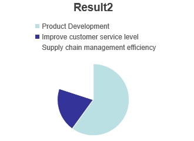
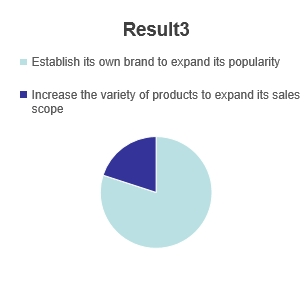

My survey found that 80 percent of respondents thought the company needed to marketing , and 20 percent thought it only needed new product development
My survey shows that 60 percent of respondents think it is necessary to Product Development , while 20 percent think it is necessary to Improve customer service level and 20 percent think supply chain management efficiency is possible
3.According to my survey, 80 percent of respondents think that what the company needs at present is to establish its own brand to expand its popularity, and 20 percent think that it needs to increase the variety of products to expand its sales scope